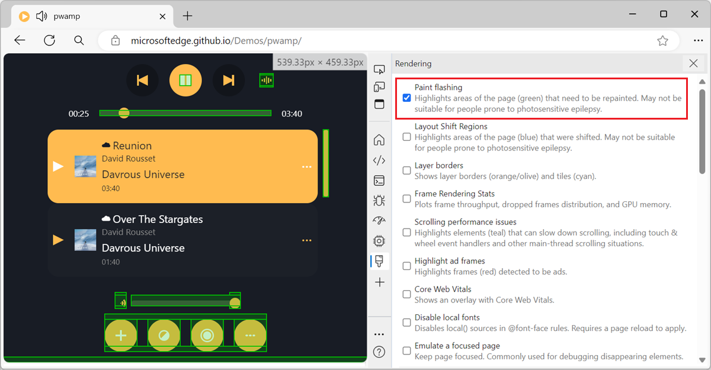

15 Perf tips
-
Highlight areas that the browser engine re-paints

When you scroll through a webpage, or when parts of the webpage change, the browser engine sometimes needs to repaint parts of the page. The process of converting the layout and style information into... Read more
-
Find memory leaks by comparing heap snapshots
 Note: If you think your memory leak comes from DOM nodes, you can also use the Detached Elements tool in Edge, see Get detached DOM elements to investigate memory leaks. Memory leaks are hard to find... Read more
Note: If you think your memory leak comes from DOM nodes, you can also use the Detached Elements tool in Edge, see Get detached DOM elements to investigate memory leaks. Memory leaks are hard to find... Read more -
Display the current framerate of your webpage
 For a super smooth user experience on your website or app, it's better if the browser manages to render your page at a high framerate. Ideally, this rate should be 60 frames per second (FPS). This giv... Read more
For a super smooth user experience on your website or app, it's better if the browser manages to render your page at a high framerate. Ideally, this rate should be 60 frames per second (FPS). This giv... Read more -
Detect unused CSS and JavaScript code
 To make sure your webpage loads and appears fast for your users, load only the CSS and JS code that your page requires to appear correctly. If some of your CSS or JS code is only needed later, when th... Read more
To make sure your webpage loads and appears fast for your users, load only the CSS and JS code that your page requires to appear correctly. If some of your CSS or JS code is only needed later, when th... Read more -
Throttle your CPU
 Your development machine is very likely much more powerful than the devices your users have (which are probably low-end mobile devices). Before you ship your new app or site, thinking that it will run... Read more
Your development machine is very likely much more powerful than the devices your users have (which are probably low-end mobile devices). Before you ship your new app or site, thinking that it will run... Read more -
See the size of the transferred data for images, scripts, or other resources
 To know how much data your website transfers between the server and the client to display images, or scripts, or anything else: Open the Network tool. Refresh the page to make sure the list of req... Read more
To know how much data your website transfers between the server and the client to display images, or scripts, or anything else: Open the Network tool. Refresh the page to make sure the list of req... Read more -
Show web vitals
 Web vitals are a set of metrics that help you determine how well-built your page is. You can learn more about them here. These scores can be obtained with various online checks like PageSpeed Insights... Read moreCategories: Supported by:
Web vitals are a set of metrics that help you determine how well-built your page is. You can learn more about them here. These scores can be obtained with various online checks like PageSpeed Insights... Read moreCategories: Supported by: -
Find the most expensive CSS selectors
 When it comes to improving web rendering performance, we often spend time working on JavaScript code. But CSS has an important role to play too in how fast a web page renders. CSS selectors, in partic... Read more
When it comes to improving web rendering performance, we often spend time working on JavaScript code. But CSS has an important role to play too in how fast a web page renders. CSS selectors, in partic... Read more -
Automatically get issues your site has with performance, accessibility, security, compatibility, and others.
 Edge has a very useful Issues panel that can automatically list a lot of different issues with your site. It can detect common issues related to browser compatibility, accessibility, performance, secu... Read moreCategories: Supported by:
Edge has a very useful Issues panel that can automatically list a lot of different issues with your site. It can detect common issues related to browser compatibility, accessibility, performance, secu... Read moreCategories: Supported by: -
Check if your site can be instantly reloaded from bfcache
 Most browsers are now able to instantly go back to previously visited pages without having to wait for them to load. This ability is powered by the back/forward cache (or bfcache). Firefox, Safari, an... Read more
Most browsers are now able to instantly go back to previously visited pages without having to wait for them to load. This ability is powered by the back/forward cache (or bfcache). Firefox, Safari, an... Read more -
Record and replay user flows
 Sometimes, you need to repeatedly test the same user scenario on a website. This can happen when working on a fix or a performance improvement. Testing the same user scenario over and over again requi... Read more
Sometimes, you need to repeatedly test the same user scenario on a website. This can happen when working on a fix or a performance improvement. Testing the same user scenario over and over again requi... Read more -
Query object instances and holders from the console
 All browser DevTools have a few built-in functions in the console to do things like get the current element, or copy a string. But Safari exposes 2 nice built-in functions: queryInstances queryHolder... Read moreCategories: Supported by:
All browser DevTools have a few built-in functions in the console to do things like get the current element, or copy a string. But Safari exposes 2 nice built-in functions: queryInstances queryHolder... Read moreCategories: Supported by: -
Get detached DOM elements to investigate memory leaks
 Memory leaks can quickly become a big problem for long-running applications, and a common source of memory leaks is detached DOM elements (elements that are no longer attached to the DOM tree). It's u... Read moreCategories: Supported by:
Memory leaks can quickly become a big problem for long-running applications, and a common source of memory leaks is detached DOM elements (elements that are no longer attached to the DOM tree). It's u... Read moreCategories: Supported by: -
Throttle the network speed to test your website on slower connections
 While you may develop your website on a fast network connection at home or at work, your users may not be able to use it with an equally fast connection. Perhaps they're in a moving car, or on the sub... Read more
While you may develop your website on a fast network connection at home or at work, your users may not be able to use it with an equally fast connection. Perhaps they're in a moving car, or on the sub... Read more -
View performance markers in order
 When logging performance.timing events to the console, they appear in alphabetical order since they are properties of the PerformanceTiming object. In order to view them in order, you can use console.... Read more
When logging performance.timing events to the console, they appear in alphabetical order since they are properties of the PerformanceTiming object. In order to view them in order, you can use console.... Read more
 edge
edge
 chrome
chrome
 safari
safari
 firefox
firefox
 polypane
polypane